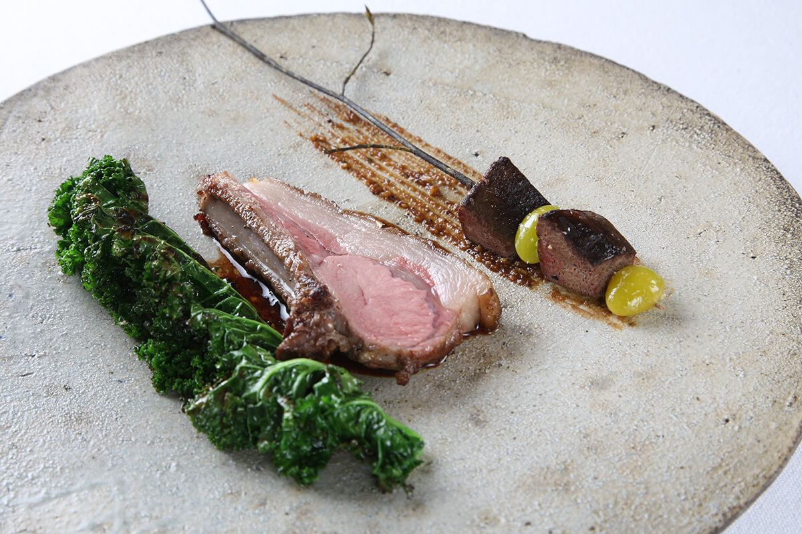
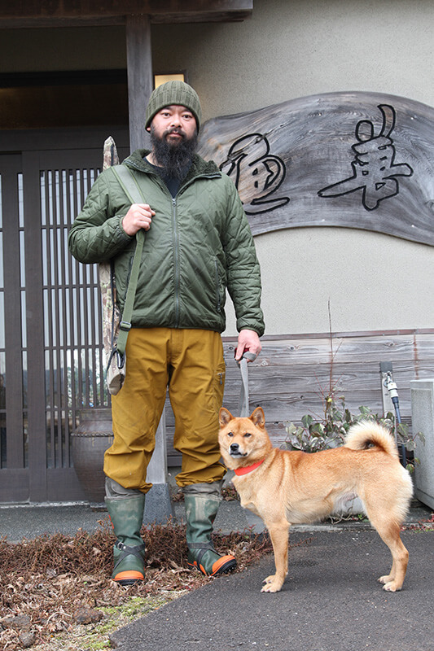
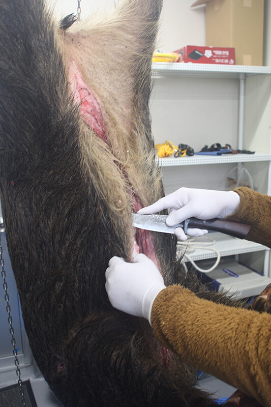
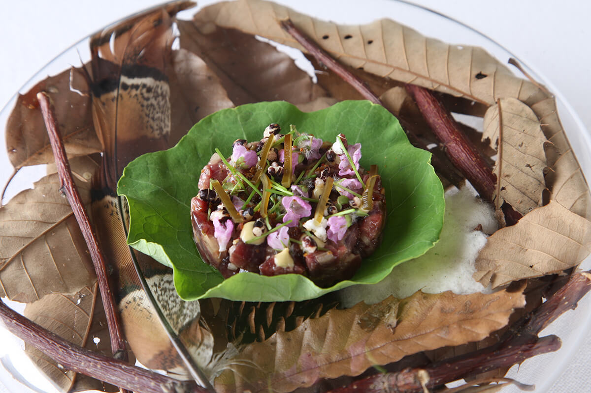
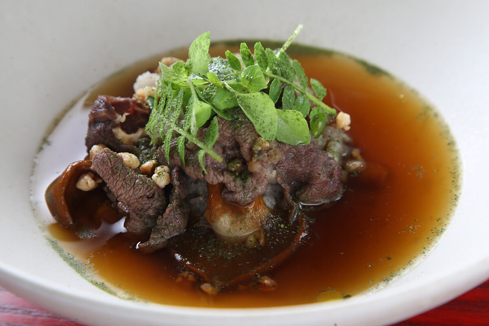
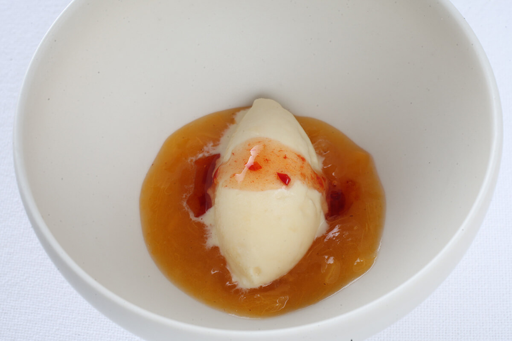
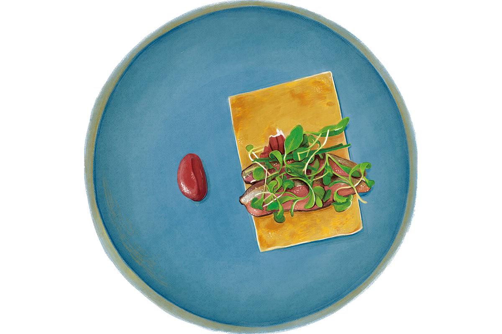
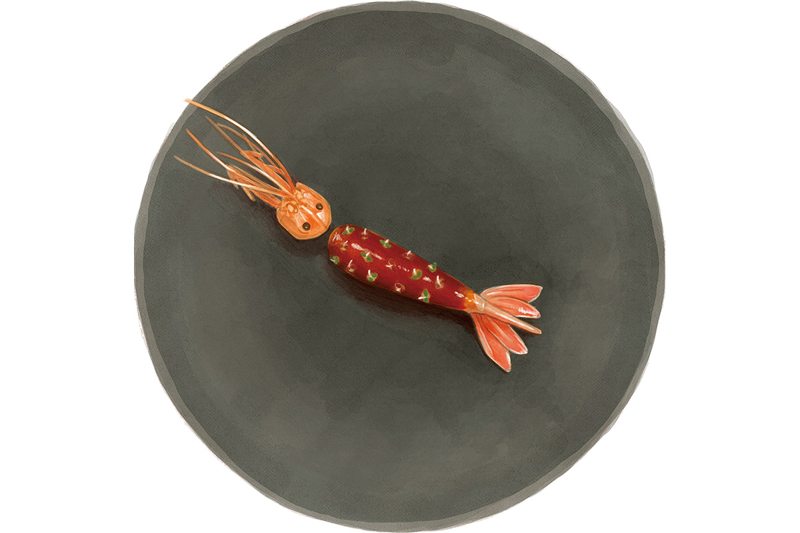

Префектура Ниигата · Сандзё · еда
Restaurant UOZEN в Сандзё: шеф, который сам охотится на дичь для своего меню

В бывшем японском ресторане среди полей Сандзё работает шеф, который ходит на охоту с собакой, рыбачит в море у Садо и сам разделывает добычу. Зимой почти вся его дегустационная программа строится на дичи Ниигаты.
Шеф
Из Токио в край полей и гор
В 2005 году тридцатилетний повар Кадзухиро Иноуэ открыл в токийском районе Икэдзири-Охаси ресторан HOKU. Со стороны карьера шла гладко: тогда в моде были блюда из органических овощей известных фермеров, и его кухню хвалили. Но сам шеф, по его словам, мучился. «В Токио всё меняется слишком быстро. То, что я хотел делать, и то, чего ждали гости, не совпадало. Мне хотелось уехать как можно скорее». По выходным он искал помещение в пригородах, на побережье Сёнан и в Камакуре, но ничего не подходило.
Тогда в семье жены заговорили о том, чтобы закрыть «Уодзэн», японский ресторан её родителей в городе Сандзё. «Значит, будем работать там», решили супруги. До Японского моря рукой подать, и можно рыбачить когда угодно. Рядом горы, где можно охотиться. Вокруг рисовые поля и огороды, где можно растить овощи. Для шефа это был идеал.

«Я еду на машине следом за Хацу. Бывает, встречаем зверя, но часто возвращаемся ни с чем. Зато в это время кожей чувствуешь, как меняются сезоны, и ничего лучше нет»
шеф Кадзухиро Иноуэ
Охота
Ресторан, где дичь начинается с выстрела
Ресторан переехал в Сандзё осенью 2013 года и поначалу работал неспешно. Перелом случился примерно через три года, когда шеф впервые сходил на охоту.
«Первая охота меня потрясла», вспоминает он. Повар впервые по-настоящему столкнулся с тем, что берёт чужую жизнь, и его отношение к продуктам изменилось. Рядом с кухней он устроил собственное помещение для разделки и хранения туш. Так появился шеф, который сам и охотится, и разделывает добычу. У него есть лицензия на переработку мяса, а за рыбой он ездит в море у острова Садо.

«Сразу после того, как зверя добыли, нужно спустить кровь, вынуть внутренности и промыть тушу. Если этого не сделать как следует, мясо само по себе становится невкусным», объясняет шеф. Охота для него не хобби: с первой минуты он следит за состоянием добычи, чтобы довести её до тарелки в лучшем виде.
Кухня
Дичь без запаха дичи
От Токио до станции Цубамэ-Сандзё два часа на синкансэне, оттуда 15 минут на такси. Здание среди полей осталось таким же, каким было при японском ресторане: в прихожей снимают обувь, и, пока идёшь в зал, трудно поверить, что это ресторан высокой кухни. Это становится ясно, только когда садишься за стол.

С середины ноября до конца апреля в ресторане подают курс дичи: в 2020 году в нём было 11 блюд, и в восьми из них кряква, кабан, олень или гималайский медведь. Общее у этих блюд одно: в них нет ни резкого звериного запаха, ни грубости, которых часто ждут от дичи. Всё решают правильная разделка и точное приготовление.
Крякву и кабана основательно жарят на дровах, чтобы раскрыть собственный вкус мяса. Красное мясо оленя выдерживают в комбу, как в японской кухне, и оно становится мягче и глубже по вкусу. Есть и авторское сочетание медвежьей лапы, богатой коллагеном, с морским ушком.

Вершина программы: мороженое из медведя. Вместо сливок шеф берёт медвежий жир и так использует зверя целиком.

«Всё, что мы готовим, рождается из природы Ниигаты»
шеф Кадзухиро Иноуэ
Зимой главная тема: дичь, весной горные травы, летом рыба, осенью грибы. Так и проходит год, а главный продукт сменяется вместе с сезоном. «У провинции должен быть свой путь. Если не предлагать того, чего нет в Токио, тебя никто не примет», говорит шеф.
Около 2018 года он наконец съездил в шведский ресторан Fäviken, о котором давно мечтал. Добраться туда можно было только на машине, около 240 км от ближайшего аэропорта, и всё же туда приезжали гурманы со всего мира. Шеф Магнус Нильссон свободно работал с немногими продуктами пустынного края. Там Кадзухиро Иноуэ заново задумался о том, что ресторан силён всем вместе: не только кухней, но и сервисом, и самим своим устройством.
В 2015–2020 годах ресторан прошёл путь от французской кухни к местным продуктам, а от них к работе с продуктом от самой добычи. Ресторанный обозреватель, побывавший здесь в 2020 году, признался, что уже после первого визита ждёт, каким UOZEN станет дальше.
Взгляд гурмана
Поездка ради одного ресторана
Гурман, объездивший около 120 стран, от Антарктиды до Северной Кореи, каждый год проводит около пяти месяцев за границей и ещё около двух в поездках по японской провинции. Ищет он то, что можно съесть только в одном месте: местные продукты в руках шефа с сильной техникой и фантазией. Ресторанов европейской кухни в провинции долго было мало: местные ходили туда разве что по праздникам, и держать смелое заведение вдали от больших городов было трудно. По его наблюдению, примерно с 2015 года соцсети подняли интерес к еде в регионах, амбициозных ресторанов стало больше, и к ним поехали гости из городов.
UOZEN он открыл для себя в декабре 2019 года по совету известного кулинарного критика из Кансая. Больше всего его поразило, что шеф сам рыбак и охотник. Ресторанов с дичью в Японии становится всё больше, но тех, кто сам добывает зверя, правильно разделывает и готовит его, почти нет. Тот, кто вдобавок ездит за рыбой к Садо, по его мнению, во всей стране один.

Шеф хорошо знает свои продукты, потому что сам их добывает, и доводит их до лучшего состояния. В декабре в одной программе гурману подали крякву и молодую утку, японского оленя, кабана, гималайского медведя и даже медвежьи почки, которые попробовать почти негде. Продукт здесь не просто подают как есть: из него делают оригинальное блюдо. Фирменная креветка ботан-эби с Садо вкусна и с одной солью, но с желе из креветок и соусом руй её вкус раскрывается слоями. Он вспоминает и крокеты из конфи утиной ножки, и сиве, рагу из медвежьей лапы и чёрного морского ушка. Все блюда курса, около десяти, были, по его словам, превосходны.

Шеф рассказал гурману о своём деле и показал разделочную. Страсть, с которой он относится к продуктам, по словам гостя, видна в каждом блюде, и ради этого ресторана стоит специально ехать в Ниигату.
Restaurant UOZEN
- Адрес
- префектура Ниигата, Сандзё, Хигаси-Осаки, 1-10-69-8
- Телефон
- +81 256-38-4179
- Часы работы
- 11:30–15:00 (последний заказ в 13:00), 17:30–22:00 (последний вход в 20:00)
- Выходные
- понедельник, бывают и другие выходные
- Цены / Вход
- обед от 4700 до 11 000 иен, ужин от 7000 иен (цены обеда и ужина без налога и сервисного сбора), программа из дичи 15 000 иен
- Как добраться
- от станции Цубамэ-Сандзё 15–20 минут на такси
- Сайт
- uozen.jp
Маршрут
Два дня в Ниигате
Ночевать тот же гурман советует в Satoyama Jujo в городе Минамиуонума, примерно в полутора часах езды от UOZEN. Гостиницей управляет компания, которая издаёт журнал о стиле жизни. Интерьеры здесь в духе середины XX века, зимой купаются под открытым небом среди снегов, а кормят местными продуктами. По его словам, это одна из лучших гостиниц Японии.
Satoyama Jujo
- Адрес
- префектура Ниигата, Минамиуонума, Осава, 1209-6
- Телефон
- +81 25-783-6777
- Цены / Вход
- от 26 600 иен с человека за ночь с ужином и завтраком (без налога, с сервисным сбором)
- Номера
- 13
По дороге он советует заехать в «Кэякиэн». Это ресторан в старом доме эпохи Мэйдзи под соломенной крышей, где готовят местную кухню Уонумы: весной горные травы, летом дикую речную рыбу аю, осенью грибы, зимой корнеплоды. Горные травы здесь подают самыми разными способами, а летом аю медленно жарят над очагом ирори. Кухня совсем другая, чем в UOZEN, поэтому, если побывать там в разные дни, хорошо видно, насколько разнообразна еда Ниигаты.
«Кэякиэн»
- Адрес
- префектура Ниигата, Минамиуонума, Нагамори, 24
- Телефон
- +81 25-775-2419 (только по предварительной записи)
- Часы работы
- 11:30–13:00 (последний вход в 13:00), 17:00–21:30 (последний вход в 19:30)
- Выходные
- нерегулярно
День 1. От станции Токио 115 минут на синкансэне до станции Цубамэ-Сандзё, 20 минут на машине до Restaurant UOZEN, затем 95 минут на машине до Satoyama Jujo.
День 2. От Satoyama Jujo 35 минут на машине до «Кэякиэн», ещё 35 минут до станции Этиго-Юдзава, оттуда 90 минут на синкансэне до Токио.
Фото: Мунэаки Маэда, Хонока Ёсимото (иллюстрации).